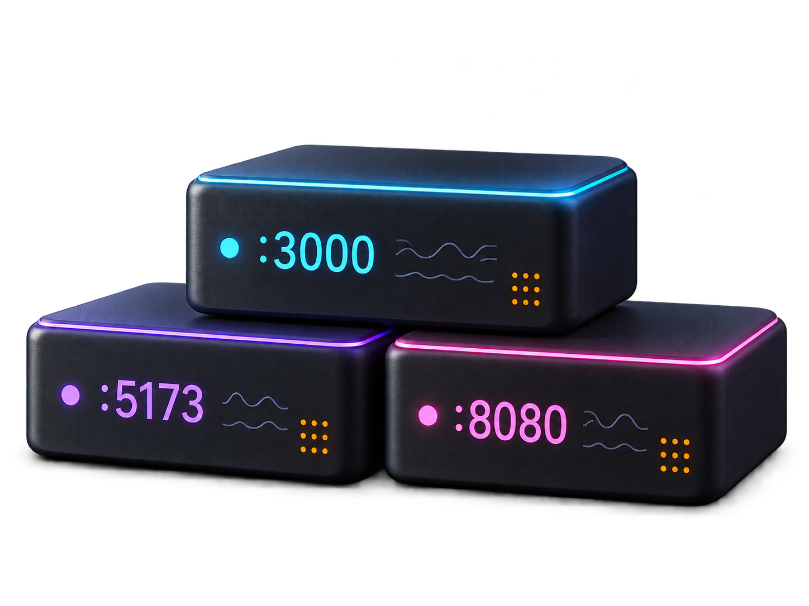
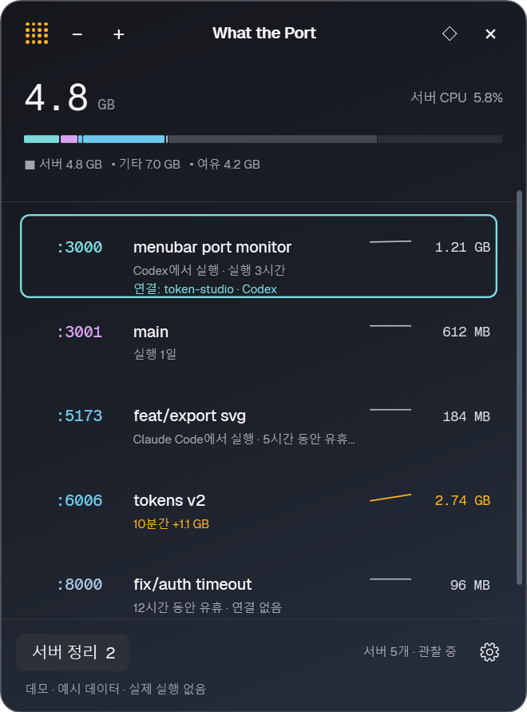
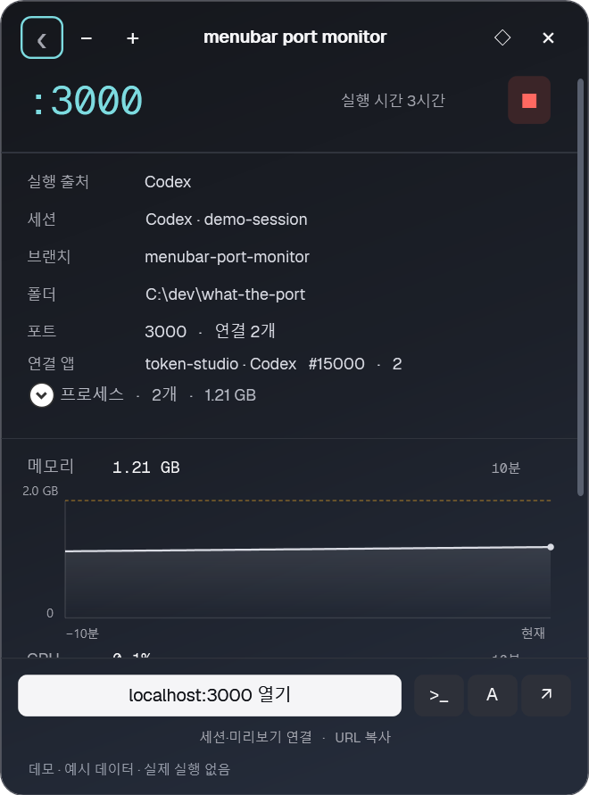
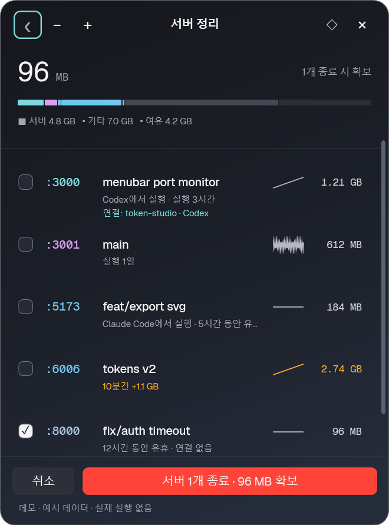
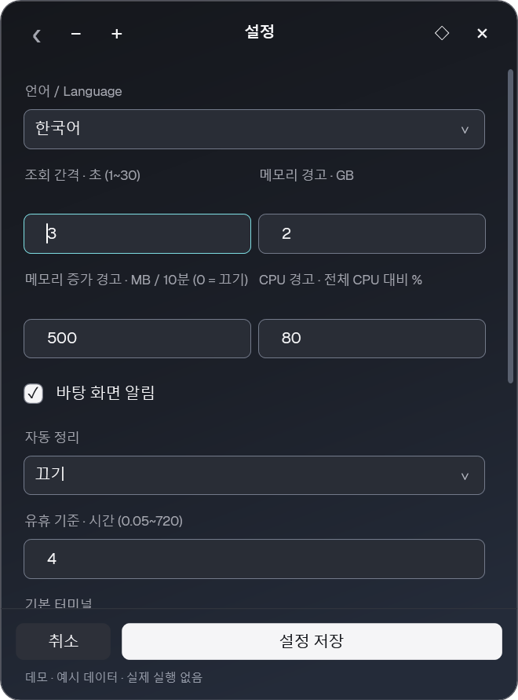

프로젝트 연결
폴더·브랜치를 확인하고 터미널, 등록한 Codex·Claude Code 세션, Vercel 미리보기를 엽니다.





폴더·브랜치를 확인하고 터미널, 등록한 Codex·Claude Code 세션, Vercel 미리보기를 엽니다.
메모리·CPU와 최근 10분 그래프를 확인합니다. 설정한 기준을 넘으면 알립니다.
선택한 서버와 하위 프로세스를 즉시 종료합니다.
자동 정리는 기본 꺼짐이며 보호·경고 서버를 제외합니다.
PS > .\wtp.exe list
PORT MEMORY PROJECT
:3000 1.21 GB local-dashboard
:5173 184 MB component-lab
:8000 96 MB api-sandbox
PS > .\wtp.exe list --json
v1.1.9 · Windows 10/11 x64 · .NET Framework 4.8 · EXE 725 KB
현재는 코드 서명이 없는 시험 빌드이며 v1.1.9 백신 재검사 전입니다. 경고와 확인 방법.
1.1.9 변경 기록원본 WhatThePort의 비공식 Windows 이식입니다. WPF 트레이 UI, 포트 탐지, 차트와 정리 흐름을 구현했습니다. 한국어·영어 UI를 지원하며 선택 즉시 미리보기하고 저장할 수 있습니다. 서버 재시작·자동 업데이트·TUI는 미구현입니다.
기본 필터는 Node, Python, .NET 등의 개발 런타임입니다. 사용자 정의 실행 파일은 모든 사용자 리스너 표시로 표시할 수 있습니다. wmux나 디버거의 내부 포트도 포함될 수 있으며 모든 리스너가 웹 서버인 것은 아닙니다.
로컬 TCP 테이블과 프로세스 정보로 상태를 확인합니다. 텔레메트리·자동 업데이트 요청은 없습니다. 에이전트의 대화 기록이나 인증 파일을 읽지 않으며 정확한 세션 ID는 직접 등록합니다. 이 웹 페이지에도 분석·추적 스크립트가 없습니다.
기본값은 Off입니다. 설정에서 Ask 또는 Automatic을 선택할 수 있습니다. 자동 정리는 연속 관측된 idle 서버만 대상으로 하며, 보호·경고 서버는 제외합니다. 처음에는 종료해도 되는 테스트 서버로 확인하세요.
Windows 네이티브 TCP 프로세스를 대상으로 합니다. WSL·Docker 내부 PID와 자원 귀속, UDP, 다른 사용자의 프로세스 상세는 지원하지 않습니다.